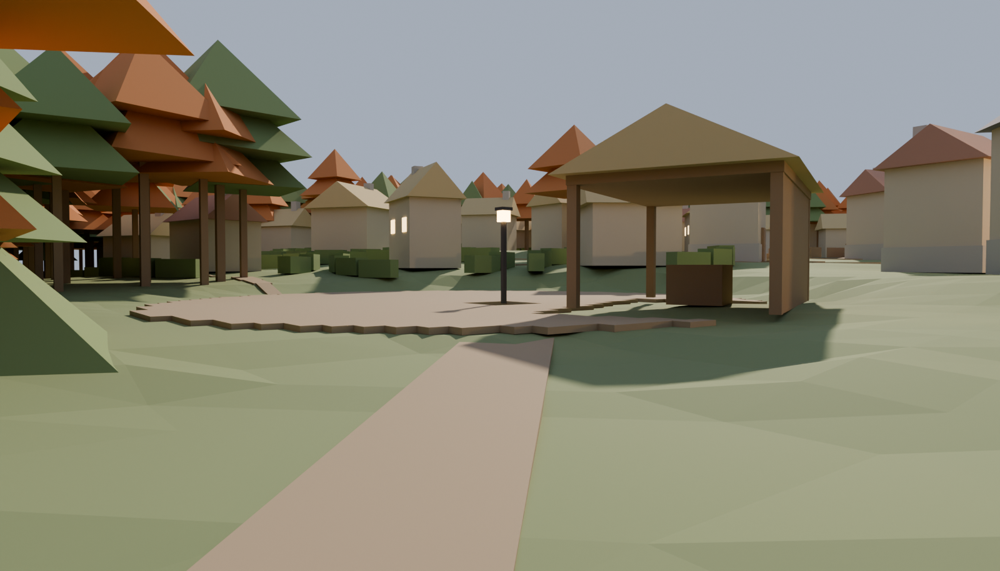
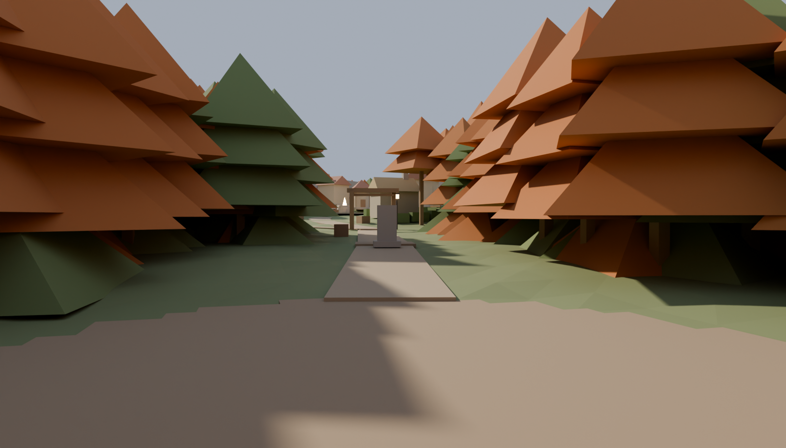
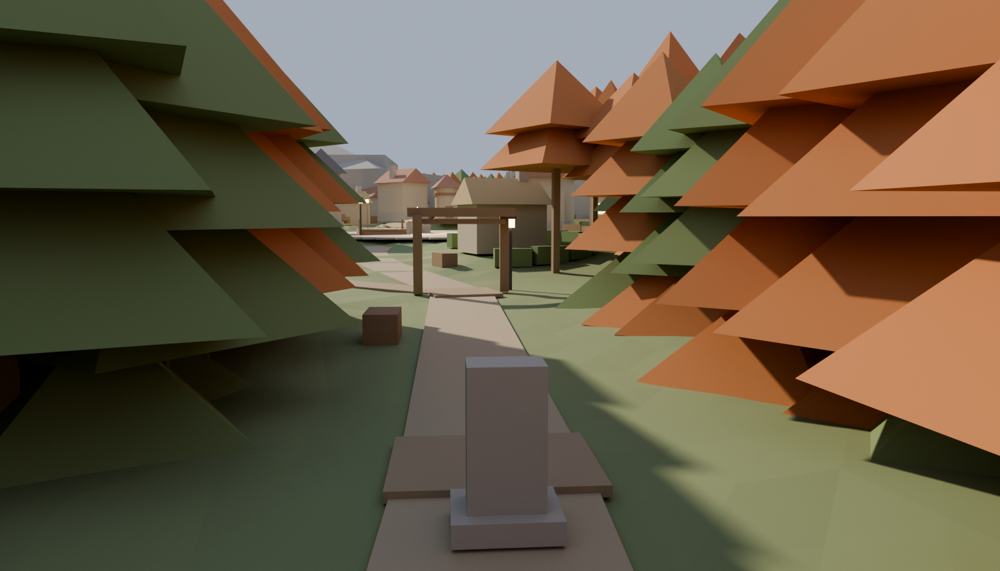

Gray review frames out of the live master, %Y-%m-%d %H:%M. This round folded in every
ratified redline: area extents doubled, the well off the lane, the Whisperwood
arrival (a clearing deep in the wood, the Waystone on a quiet climbing road, no lamp
until the arch), a stamped wandering brook at sinuosity 1.17 that crosses no home
lane, the ten lived-in landmarks including the watermill, infill households
between the lanes, a forest that contains the village rather than ringing it, and
coarse bluff massing funnelling to the Old Gate. Nothing downstream has been
re-run — no districts, no cameras, no bakes. Tree and cliff QUALITY is a
dressing-stage bar with a taste probe in front of it; what is being judged here is
density, mass, distance and composition.
The first two frames are the game's opening. Does the wood read as a container?
Infill is now one HOUSEHOLD per cottage — garden plot, fruit tree, shed or
woodpile, and a track that goes somewhere. Is the spacing village-true?
The bluffs are massing only, pending your concept pick.

orchard-approach EYE LEVEL on the gate road inside the arch: the waystone on the verge and the orchard beyond it — a player's-height read on the new distances

arrival-clearing THE GAME'S FIRST FRAME, at eye level: the arrival clearing looking north up the Whisperwood road. No lamp, no village, no roof — the wood is the whole horizon and the road is the only way out of it

waystone-road the Waystone on the quiet climbing road, where Mochi hires himself to Vesper — the wood still pressing both verges, the arch and its lamp another 20 m north